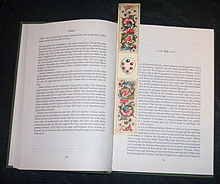

A Bookmark is a thin marker, commonly made of card, leather, or fabric, used to keep the reader's place in a book and to enable the reader to return to it with ease. Other frequently used materials for bookmarks are paper, metals like silver and brass, silk, wood, and cord. Many bookmarks can be clipped on a page with the aid of a page-flap.
Bookmarks were used throughout the medieval period,consisting usually of a small parchment strip attached to the edge of folio (or a piece of cord attached to headband). As the first printed books were quite rare and valuable, it was determined early on that something was needed to mark one's place in a book without causing its pages any harm. Some of the earliest bookmarks were used at the end of the sixteenth century, and Queen Elizabeth I of England was one of the first to own one. Modern bookmarks are available in a huge variety of materials in a multitude of designs and styles. Many are made of cardboard or heavy paper, but they are also constructed of paper, ribbon, fabric, felt, steel, wire, tin, beads, wood, plastic, vinyl, silver, gold, and other precious metals, some decorated with gemstones. The first detached, and therefore collectible, bookmarkers began to appear in the 1850s. One of the first references to these is found in Mary Russell Mitford's Recollections of a Literary Life (1852): "I had no marker and the richly bound volume closed as if instinctively." Note the abbreviation of 'bookmarker' to 'marker'. The modern abbreviation is usually 'bookmark'. Historical bookmarks can be very valuable, and are sometimes collected along with other paper ephemera. By the 1860s, attractive machine-woven markers were being manufactured, mainly in Coventry, England, the centre of the silk-ribbon industry. One of the earliest was produced by J.J. Cash to mark the death of Albert, Prince Consort, in 1861. Thomas Stevens of Coventry soon became pre-eminent in the field and claimed to have nine hundred different designs. Woven pictorial bookmarks produced by Thomas Steven, a 19th-century English silk weaver, starting around 1862, are called Stevengraphs.[2] Woven silk bookmarks were very appreciated gifts in the Victorian Era and Stevens seemed to make one for every occasion and celebration. One Stevengraph read: All of the gifts which heaven bestows, there is one above all measure, and that's a friend midst all our woes, a friend is a found treasure to thee I give that sacred name, for thou art such to me, and ever proudly will I claim to be a friend to thee. Most 19th-century bookmarks were intended for use in Bibles and prayer books and were made of ribbon, woven silk, or leather. By the 1880s the production of woven silk markers was declining and printed markers made of stiff paper or cardboard began to appear in significant numbers. This development paralleled the wider availability of books themselves, and the range of available bookmarkers soon expanded dramatically.